Trong series bài dịch này, mình sưu tầm những bài trên nguồn như Medium và dịch lại với mục đích:
Bản thân: dịch tức là phải đọc kỹ, giúp mình hiểu vấn đề theo nhiều cách khác nhau.
Cộng đồng: hỗ trợ các bạn không có tài khoản medium hoặc ngại đọc tiếng Anh có thể tiếp cận được kiến thức.
Tìm đọc bài gốc ở đây
Lưu ý: Có một số thuật ngữ mình giữ nguyên bản tiếng Anh vì bản tiếng Việt dịch khá khan hiếm và khó hiểu, để tiếng Anh sẽ dễ hiểu và dễ google hơn.
1 Bắt đầu
Trên internet, đã có rất nhiều nội dung về BatchNorm (BN). Tuy nhiên, nhiều trong số đó có cách hiểu hơi lỗi thời về BN. Trong bài viết này, tác giả quy về một mối những thông tin phân mảnh lại để xây dựng một cách hiểu tốt hơn về phương pháp căn bản này (BN), bao gồm các phần:
Cách hiểu mới nhất về BN quá 3 cấp độ hiểu: 30 giây, 3 phút, và hiểu sâu.
Các thành phần cốt lõi để tận dụng tối đa BN.
Một cách triển khai đơn giản của BN trên Google Colab bằng cách tái tạo lại thí nghiệm dựa trên MNIST trong bài báo khoa học gốc -> Click Here
Những lý do mà người đọc hay hiểu sai về BN (dù rằng từng đọc bài từ nhiều tác giả chất lượng)
OK! Bắt đầu nào.
2 Tổng quan
2.1 Cách hiểu trong 30 giây
Batch-Normalization (BN) là phương pháp khiến cho việc huấn luyện mạng nơ rông sâu (Deep Nearon Network, DNN) nhanh và ổn định hơn.
Nó bao gồm chuẩn hoá các vectors của lớp ẩn (hidden layers) sử dụng trung bình và phương sai (mean và variance) của batch hiện tại. Bước chuẩn hoá có thể được áp dụng ngay trước hoặc ngay sau một hàm phi tuyến tính.
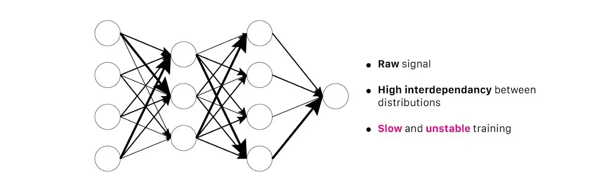
Multilayer Perceptron (MLP) không batch normalization (BN) | Nguồn : author - Design : Lou HD
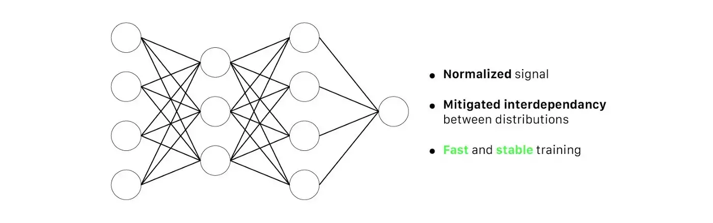
Multilayer Perceptron (MLP) có batch normalization (BN) | Nguồn : author - Design : Lou HD
Tất cả các nền tảng học sâu đều đã hỗ trợ Batch Normalization. Thường bạn sẽ sử dụng BN như một lớp trong mạng DNN.
Với những ai thích đọc code hơn chữ thì tác giả có triển khai BN dạng Jupyter Notebook ở đây.
2.2 Cách hiểu trong 3 phút
Cách tính toán BN là khác nhau cho traing vs testing.
2.2.1 Training
Với mỗi lớp ẩn (hidden layer), BN chuyển đổi tín hiệu như sau:
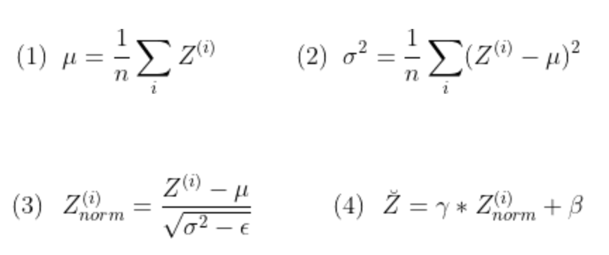
Lớp BN đầu tiên xác định trung bình 𝜇 và phương sai σ² của các kích hoạt (activation) trong batch, sử dụng công thức (1) và (2). Tiếp theo, nó chuẩn hoá vector kích hoạt \(Z^{(i)}\) với công thức (3). Thế là, tất cả các output đều được tuân theo phân phối chuẩn trong batch đó. (𝜀 là một hằng số giúp duy trì numerical stablity)
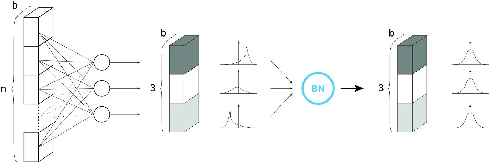
Bước đầu của Batch Norm. Ví dụ một hidden layer với 3 neurons, kích cỡ batch là b. Mỗi neuron sau đó đều tuân theo phân phối chuẩn | Nguồn : author - Design : Lou HD
Ở bước cuối, BN tính output Ẑ(i) bằng cách áp dụng một biến đổi tuyển tính (linear transformation) với hai tham số huấn luyện là 𝛾 và 𝛽 (4). Bước này cho phép mô hình chọn được phân phối tối ưu cho từng lớp ẩn khi thay đổi hai tham số:
𝛾 giúp điều chỉnh phương sai phân phối
𝛽 giúp điều chỉnh bias, dịch chuyển phân phối sang trái hay phải
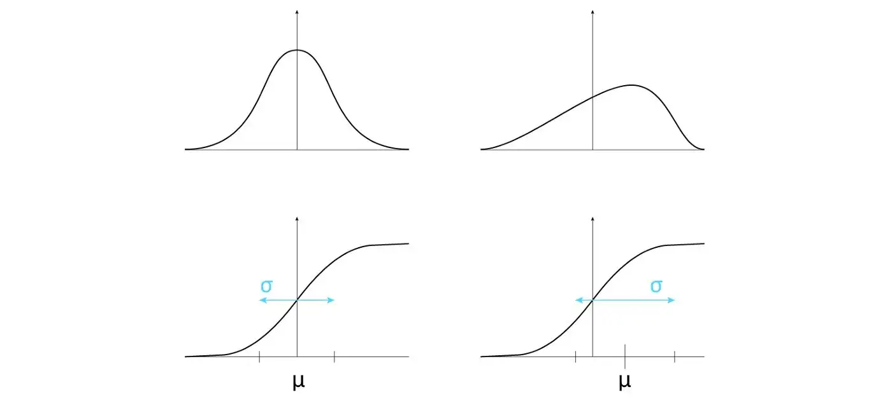
Lợi ích của tham số 𝛾 và 𝛽: Thay đổi phân phối (hình trên) giúp chúng ta sử dụng các hình thái khác nhau của hàm phi tuyến tính (hình dưới) | Nguồn : author - Design : Lou HD
Lưu ý: Những lý do giải thích cho sự hiệu quả của BN có thể bị hiểu sai hoặc mắc lỗi (ngay cả trong bài báo gốc). Một bài báo gần đây [2] phủ định vài giả thiết sai và giúp cộng đồng hiểu tốt hơn về BN. Chúng ta sẽ nói rõ hơn trong phần “Tại sao BN hiệu quả?”
Với mỗi lần lặp, network sẽ tính toán trung bình 𝜇 và phương sai σ² cho batch hiện tại. Sau đó nó huấn luyện 𝛾 và 𝛽 bằng gradient descent, sử dụng Đường trung bình động hàm mũ (Exponential Moving Average/EMA) giúp ưu tiên hơn cho những iterations gần nhất.
2.2.2 Đánh giá
Khác với khi huấn luyện, chúng ta có thể không có batch đầy đủ để đưa vào mô hình.
Để giải quyết vấn đề này, chúng ta tính (𝜇_pop , σ_pop) với:
𝜇_pop : ước lượng giá trị trung bình cho toàn bộ quần thể (population) được nghiên cứu
σ_pop : ước lượng giá trị độ lệch chuẩn cho toàn bộ quần thể (population) được nghiên cứu
Hai giá trị này được tính toán sử dụng các giá trị (𝜇_batch , σ_batch) được tính trong quá trình huấn luyện, và input thẳng vào công thức (3) ở trên, bỏ qua bước (1) và (2)
Lưu ý: Chúng ta sẽ tìm hiểu kỹ hơn vấn đề này ở phần “Chuẩn hoá khi đánh giá”
2.2.3 Thực tế
Trong thực tế, chúng ta xem BN như một lớp bình thường, như là một perceptron, convultional layer, hay một hàm kích hoạt hoặc một lớp dropout.
Các nền tảng thông dụng cũng đã triển khai BN như một layer. Ví dụ:
Pytorch: torch.nn.BatchNorm1d, torch.nn.BatchNorm2d, torch.nn.BatchNorm3d
Tensorflow / Keras: tf.nn.batch_normalization, tf.keras.layers.BatchNormalization
Tất cả các cách triển khai của BN đều cho phép bạn cấu hình tham số một cách độc lập. Tuy nhiên, kích cỡ của vector đầu vào là quan tọng nhất. Nó nên được thiết lập bằng:
Số nơ-ron của lớp ẩn hiện tại (cho MLP)
Số filters của lớp ẩn hiện tại (cho CNN)
Hãy đọc tài liệu về nền tảng yêu thích của bạn về BN để biết chi tiết hơn về cách sử dụng và triển khai.
2.2.4 Tổng quan kết quả
Kể cả khi chúng ta chưa hiểu tất cả cấu tạo của Batch Normalization, có một thứ mà ai cũng phải công nhận: Nó rất hiệu quả!
Để hiểu thêm, hãy xem kết quả của bài báo gốc [1]:
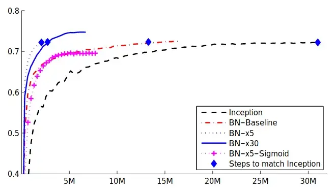
Ảnh 1: Hiệu quả của BN. Độ chính xác trên tập đánh giá của ImageNet(2012) theo số lần huấn luyện. Năm networks được so sánh: “Inception” là network Inception gốc [3], “BN-X” là Inception network thêm BN (với 3 learning rates: x1, x5, x30 lần Inception tối ưu), “BN-X-Sigmoid” là Inception network thêm BN, nhưng thay ReLU bằng Sigmoid
Kết quả rất rõ ràng: Các lớp BN tăng tốc quá trình luấn luyện, hỗ trợ tốt nhiều giá trị learning rate nhưng lại không hi sinh khả năng hội tụ của mô hình.
Lưu ý: Đọc đến đây là đủ cho bạn để ứng dụng BN rồi. Tuy nhiên, để tận dụng tối đa được BN thì chúng ta cần đào sâu hơn nữa.
Batch Normalization liên quan gì đến hình ảnh này nhỉ? | Nguồn : author - Design : Danilo Alvesd
3 Hiểu về Batch Normalization
3.1 Triển khai
Tác giả đã triển khai các lớp BN bằng Pytorch để tái tạo kết quả từ bài báo gốc. Mã nguồn ở trên repo này
Các bạn cũng nên tham thảo thêm các cách triển khai BN khác nhau, nó sẽ rất có ích khi bạn thấy được cách các nền tảng DL lập trình BN như thế nào.
3.1.1 Các lớp BN trong thực tế
Trước khi đi vào lý thuyết, chúng ta sẽ tóm lại vài điều về BN:
BN ảnh hưởng thế nào đến hiệu năng huấn luyện? Tại sao BN lại quan trọng như vậy trong Deep Learning?
BN có những tác dụng phụ nào mà chúng ta cần lưu tâm?
Khi nào cần dùng BN và dùng như thế nào?
3.1.2 Kết quả từ bài báo gốc
Như đã nói ở trên, BN được sử dụng rộng rãi vì hầu như lúc nào nó cũng cải thiện hiệu năng của các mô hình học sâu.
Bài báo gốc thực hiện 3 thí nghiệm để minh hoạ thấy rằng phương pháp của họ hiệu quả thế nào.
Đầu tiên, họ hâuns luyện một mô hình phân loại trên tệp dữ liệu MNIST (chữ số viết tay). Mô hình có 3 lớp fully-connected, mỗi lớp gồm 100 nơ ron, cùng với kích hoạt sigmoid. Họ huấn luyện mô hình này 2 lần (có / không thêm BN) trong 50,000 lần lặp với SGG, và learning rate như nhau (0.01). Tất cả các lớp BN đều đặt ngay sau hàm kích hoạt.
Bạn có thể dễ dàng tái tạo kết quả này mà không cần GPU, đây là một cách tuyệt vời để làm quen với khái niệm này.
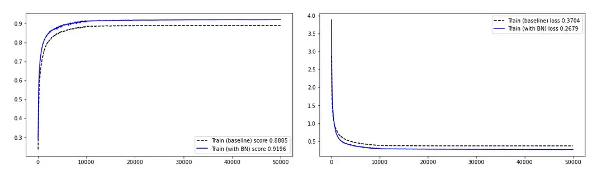
Hình 2: Ảnh hưởng của BN lên quá trình huấn luyện mạng MLP đơn giản | Trái: độ chính xác khi huấn luyện | Phải: độ sai (loss) khi huấn luyện | Nguồn : tác gỉa
Rất tốt! BN nâng cao hiệu năng của mô hình, cả ở độ chính xác lẫn độ sai.
Thí nghiệm thứ hai là về giá trị kích hoạt của lớp ẩn. Sau đây là đồ thị giá trị của lớp ẩn cuối (ngay trước khi áp dụng hàm phi tuyến tính như ReLU hay sigmoid, v.v):
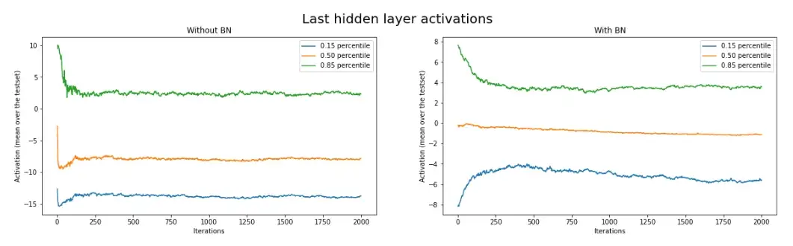
Ảnh hưởng của BN lên giá trị kích hoạt | Nguồn : tác giả
Khi không có BN, giá trị kích hoạt giao động nhiều hơn với những lần lặp đầu tiên. Ngược lại, khi có BN, đường cong của giá trị kích hoạt mượt hơn.
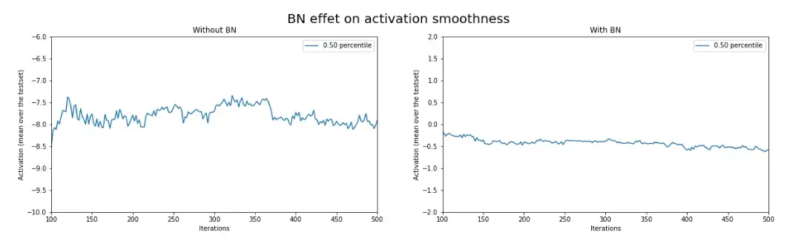
Ảnh hưởng của BN lên giá trị kích hoạt | Mô hình có giá trị kích hoạt dao động mượt hơn khi thêm BN | Nguồn : tác giả
Tín hiệu cũng trở nên ít nhiễu hơn khi thêm lớp BN. Có vẻ như BN làm mô hình hội tụ dễ hơn.
Ví dụ này vẫn chưa minh hoạ được hết lợi ích của Batch Normalization.
Bài báo gốc thực thiện thêm thí nghiệm thứ 3. Nhóm tác giả muốn so sánh hiệu năng của mô hình khi thêm BN với bộ dữ liệu lớn hơn: ImageNet(2012). Để làm vậy, họ huấn luyện một mạng nơ-ron rất mãnh mẽ là Inception. Ban đầu, Inception không sử dụng bất kỳ lớp BN nào. Họ thêm vài lớp BN và huấn luyện với nhiều mức learning rate khác nhau (x1, x5, x30 lần giá trị tối ưu trước đó). Họ cũng thử nghiệm thay tất cả hàm ReLU bằng sigmoid trong một mô hình khác. Cuối cùng, họ so sánh những network đã được thay đổi với mô hình gốc.
Ảnh 1: Hiệu quả của BN. Độ chính xác trên tập đánh giá của ImageNet(2012) theo số lần huấn luyện. Năm networks được so sánh: “Inception” là network Inception gốc [3], “BN-X” là Inception network thêm BN (với 3 learning rates: x1, x5, x30 lần Inception tối ưu), “BN-X-Sigmoid” là Inception network thêm BN, nhưng thay ReLU bằng Sigmoid
Chúng ta có thể kết luận như sau:
Thêm lớp BN giúp hội tụ nhanh hơn và tốt hơn (~ độ chính xác cao hơn)
Với bộ dữ liệu lớn, những cải thiện này càng quan trọng hơn là khi sử dụng những bộ dữ liệu nhỏ hơn như MNIST.
Thêm lớp BN cho phép chúng ta sử dụng learning rate lớn hơn nhưng lại không hi sinh tính hội tụ của mô hình.
Nhóm tác giả thậm chí còn huấn luyện thành công mô hình Inception kết hợp BN với learning rate lớn gấp 30 lần so với mô hình gốc. Thật ấn tượng, khi chỉ với x5 learning rate thì mô hình gốc đã phân tán rồi.
Bằng cách đó, BN làm cho quá trình tìm learning rate tốt dễ dàng hơn khi khoảng cách từ underfit đến gradient explosion của learning rate được tăng lên đáng kể.
Thêm nữa, learning rate cao hơn giúp mô hình thoát hỏi giá trị tối ưu cục bộ. Nhờ vậy mà optimizer dễ dàng tìm được nghiệm tốt hơn cho quá trình hội tụ.
Mô hình sử dụng sigmoid có kết quả khá cạnh tranh so với mô hình sử dụng ReLU
Ở một bức tranh tổng quan hơn, chúng ta thấy rằng mô hình ReLU có hiệu năng khá hơn một chút so với mô hình dùng sigmoid. Tuy nhiên đó không phải là điều quan trọng nhất.
Tác giả Ian Goodfellow (tác giả của GAN) từng nói về BN:
Trước BN, chúng ta nghĩ rằng huấn luyện mô hình học sâu với hàm kích hoạt sigmoid ở các tầng ẩn là không thể. Chúng ta xem xét một vài hướng tiếp cận để xử lý sự bất ổn định khi huấn luyện, ví dụ như các phương pháp khởi tạo tham số. Những mảnh ghép này dựa nhiều vào kinh nghiệm cũng như rất khó để cho ra kết quả thoả mãn. Batch Normalization cho phép chúng ta huấn luyện được cả những mô hình bất ổn định. Đó chính là những gì chúng ta thấy được từ ví dụ này. - Ian Goodfellows (tác giả viết lại theo nguồn: https://www.youtube.com/watch?v=Xogn6veSyxA)
Đến đây, chúng ta đã hiểu được BN có ý nghĩa quan trọng như thế nào trong lĩnh vực Học sâu.
Những kết quả trên tạo nên một bức tranh tổng quan về lợi ích của BN khi huấn luyện mô hình. Tuy nhiên, BN có những tác dụng phụ mà chúng ta cần lưu tâm để tận dụng được nó.
3.1.3 Tác dụng phụ của BN: Regularization
BN phụ thuộc vào trung bình 𝜇 và phương sai σ² để chuẩn hoá giá trị kích hoạt. Vì thế mà kết quả đầu ra của BN sẽ bị ảnh hưởng với thống kê của batch hiện tại. Những sự biến đổi sẽ tạo thêm nhiễu, phụ thuộc vào dữ liệu đầu vào của batch hiện tại.
Việc thêm nhiễu cũng sẽ giúp tránh overfitting… nghe khá giống với regularization, đúng không nhỉ?
Trong thực nghiệm, chúng ta sẽ không dựa vào BN để xử lý overfitting, vì sự quan trọng của tính trực giao (orthogonality). Nói một cách đơn giản, mỗi module nên chỉ đảm nhiệm một nhiệm vụ. Điều này giúp tránh việc phức tạp hoá quy trình phát triển.
Tuy nhiên, việc biết đến tác dụng phụ này giúp chúng ta giải thích được những hành vi ngoài mong đợi của mô hình.
Lưu ý: Khi kích thước batch càng lớn thì tác động lên regularization càng ít đi (do nhiễu ảnh hưởng ít hơn)
Làm sao để deploy được mô hình có BN lên hệ thống nhúng? | Nguồn : Marília Castelli
3.1.4 Chuẩn hoá khi đánh giá
Có hai trường hợp mà mô hình được gọi là đang ở chế độ đánh giá (evaluation mode):
Khi đang cross-validation hay test (huấn luyện và phát triển mô hình)
Khi đang deploy mô hình
Ở trường hợp đầu, chúng ta có thể áp dụng Batch Normalization với thống kê từ batch đang xử lý. Tuy nhiên, ở trường hợp sau thì cách này không áp dụng được, vì chúng ta không có đủ một batch để sử dụng.
Hãy cùng xem xét trường hợp một robot với camera nhúng. Có thể chúng ta sẽ sử dụng mô hình để dự đoán vị trí của vật cản đường phía trước. Chúng ta muốn tính toán dự đoán dựa trên 1 khung ảnh duy nhất cho mỗi iteration. Nếu kích cỡ batch là N, thì N-1 inputs còn lại thì chúng ta nên chọn như thế nào để tính toán forward propagation?
Nhớ rằng với mỗi lớp BN, (𝛽, 𝛾) được huấn luyện bằng tín hiệu đã chuẩn hoá. Thế nên chúng ta cần xác định (𝜇, σ) để tạo ra kết quả có ý nghĩa.
Một giải pháp là chọn giá trị ngẫu nhiên để điền cho đủ batch. Khi đưa batch đầu tiên vào, chúng ta sẽ có một kết quả cho ảnh mà chúng ta quan tâm. Nếu chung ta tạo thêm batch thứ hai với giá trị ngẫu nhiên khác, mô hình sẽ cho dự đoán khác trên cùng một ảnh. Đây không phải là hành vi mong muốn vì mô hình có thể dự đoán khác nhau cho cùng một input.
Cách giải quyết tốt hơn là xác định (𝜇_pop , σ_pop) - ước lượng trung bình và độ lệch chuẩn của quần thể mà ta nhắm đến. Thông số này được tính bằng trung bình của (𝜇_batch, σ_batch) trong quá trình huấn luyện.
Cách này có thể dẫn đến sự bất ổn định trong quá trình đánh giá: Chúng ta sẽ thảo luận điều này ở phần tiếp theo
3.1.5 Tính ổn định của BN layer
Tuy BN khá hiệu quả, nó cũng có thể đôi khi gây ra vấn đề về ổn định. Có trường hợp BN làm giá trị kích hoạt bị explode khi đánh giá (khiến loss=NaN).
Như ở trên có đề cập, (𝜇_pop , σ_pop) trong quá trình đánh giá được dựa trên (𝜇_batch, σ_batch) khi huấn luyện.
Thử tưởng tượng một mô hình chỉ được huấn luyện bằng tệp ảnh giày thể thao nhưng khi test lại bằng tập giày derby (kiểu giày Tây)?
Nếu phân phối của đầu vào quá khác giữa khi huấn luyện và đánh giá, mô hình có thể phản ứng thái quá với một vài tín hiệu, dẫn đến sự phân tán của giá trị kích hoạt | Nguồn : Grailify & Jia Ye
Giả sử giá trị kích hoạt ở lớp ẩn có phân phối quá khác biệt giữa khi huấn luyện và khi đánh giá, (𝜇_pop, σ_pop) sẽ không ước lượng đúng được trung bình và độ lệch chuẩn của quần thể. Sử dụng bộ giá trị này sẽ đẩy lệch giá trị kích hoạt xa khỏi phân phối chuẩn (𝜇 = 0, σ = 1) -> đánh giá sai giá trị kích hoạt.
Hiện tượng này gọi là “covariate shift”, sẽ nói ở phần sau
Hiệu ứng trên còn được tăng cường bởi một thuộc tính của BN: Trong khi huấn luyện, giá trị kích hoạt được chuẩn hoá bởi chính giá trị của nó. Còn khi inference, thì tín hiệu lại cũng được sử dụng giá trị (𝜇_pop, σ_pop) được tính khi ở tranining. Thế nên, hệ số của việc chuẩn hoá không bao gồm những giá trị kích hoạt.
Nói chung, tập huấn luyện phải “đủ giống” với tệp đánh giá: Nếu không, việc huấn luyện mô hình gần như là không thể. Trong đa số trường hợp, (𝜇_pop, σ_pop) cũng nên khớp với bộ dữ liệu đánh giá. Nếu không được vậy thì chúng ta sẽ kết luận là tập huấn luyện không đủ lớn, hoặc chất lượng của dữ liệu không đủ tốt cho tác vụ mục tiêu.
Tác giả cũng từng gặp trường hợp này trong cuộc thi Pulmonary Fibrosis Progression Kaggle competition. Tập huấn luyện bao gồm metadata, 3D scans phổi của từng bệnh nhân. Nội dung của những bản scans này phức tạp và phong phú, tuy nhiên nó chỉ từ gần 100 bệnh nhân để chia thành train và validation. Kết quả là CNN dùng để trích xuất đặc trưng mà tác giả dùng chỉ trả về NaN khi mô hình chuyển từ huấn luyện sang đánh giá.
Khi bạn không thể lấy thêm dữ liệu để bổ sung cho huấn luyện, bạn cần phải tìm cách khác. Trong trường hợp này, tác giả “ép” các lớp BN phải tính lại (𝜇_batch, σ_batch) khi đánh giá. (tác giả tự nhận đây là cách hơi “xấu xí”, nhưng anh ta không còn thời gian).
Thêm các lớp BN vào mô hình mà tự giả định rằng nó không có ảnh hưởng xấu không phải lúc nào cũng là một điều tốt.
3.1.6 Recurrent Network và Layer Normalization
Trong thực nghiệm, nhiều người nhận định rằng:
Trong CNN: Batch Normalization (BN) phù hợp hơn
Trong RNN: Layer Normalization (LN) phù hợp hơn
Trong khi BN dùng batch hiện tại để chuẩn hoá từng giá trị, LN thì dùng tất cả các layers hiện tại. Nói cách khác, LN chuẩn hoá trên toàn bộ các đặc trưng của dữ liệu thay vì theo từng đặc trưng như BN. Điều này làm LN hiệu quả hơn với RNN. Việc đưa một phương pháp nhất quán cho RNN khá là khó, vì RNN sử dụng phép nhân lặp đi lặp lại với cùng một bộ trọng số. Vậy chúng ta nên chuẩn hoá theo từng step một cách độc lập? Hay là nên tính mean trên toàn steps, hay là chuẩn hoá theo quy hồi? (Tham khảo: YouTube)
Câu hỏi này nằm ngoài phạm vi của bài viết này.
3.1.7 Trước hay sau phi tuyến tính?
Từ trước đến nay, lớp BN thường đặt ngay sau hàm phi tuyến tính, đây là cách làm đúng theo mục tiêu và giả thiết của tác giả gốc:
“Chúng tôi muốn đảm bảo rằng, với mọi giá trị tham số, mạng lưới lúc nào cũng cho ra giá trị kích hoạt với phân phối mong muốn” — Sergey Ioffe & Christian Szegedy (source : [1])
Một vài thí nghiệm cho thấy việc đặt lớp BN đằng sau hàm phi tuyến tinh cho kết quả tốt hơn. Ví dụ
François Chollet, cha đẻ của Keras và hiện tại là kỹ sư của Google, cho rằng:
Tôi chưa xem lại những khuyến cáo trong paper gốc, nhưng tôi đảm bảo rằng mã nguồn gần đây viết bởi Christian [Szegedy] đặt relu trước BN. Tuy nhiên, vấn đề này cũng hay được tranh luận.
Vẫn có nhiều kiến trúc thường dùng trong transfer learning đặt BN trước hàm phi tuyến tính như ResNet, mobilenet-v2, v.v
Nên nhớ rằng trong bài báo [2], khi thách thức những giả thiết của bài báo gốc để giải thích sự hiệu quả của BN thì tác giả lại để lớp BN trước hàm kích hoạt. Tuy nhiên, tác giả lại không đưa ra nguyên nhân thuyết phục cho việc này.
Cho đến nay thì vấn đề này vẫn được thảo luận và tranh cãi. Trên reddit cũng có một thread nói về điều này.
3.2 Tại sao BN lại hiệu quả?
Trong đa số trường hợp, BN gia tăng hiệu năng của mô hình học sâu. Điều đó rất tốt, nhưng chúng ta cần hiểu thêm về nguyên nhân gốc rễ của nó.
Vấn đề là: chúng ta vẫn chưa biết tại sao BN lại hiểu quả như vậy. Một vài giả thiết được đưa ra trong cộng đồng học sâu và chúng ta sẽ xem xét từng cái một.
Trước khi thảo luận tiếp, đây là những thứ chúng ta sẽ thấy:
Bài báo gốc [1] giả định rằng BN hiệu quả vì nó giảm đi thứ mà họ gọi là Internal covariate shift (ICS). Một bài báo gần đây [2] đã phủ định điều này.
Giải thiết tiếp theo cho rằng BN giảm thiểu sự phụ thuộc lẫn nhau giữa các layers khi huấn luyện.
Giả thiết từ MIT [2] nhấn mạnh ảnh hưởng của BN lên optimization landscape smoothness, khiến training dễ dàng hơn.
Việc khám phá những giả thiết trên sẽ xây dựng cho bạn cách hiểu vững chắc hơn về Batch Normalization.
3.2.1 Giả thiết 1: BN giảm internal covariate shift
Cho dù ảnh hưởng của BN là rất lớn, BN vẫn là điều dễ bị hiểu sai. Và điều này đa phần là do một giả thiết sai của bài báo gốc [1]:
“Chúng tôi gọi đến sự thay đổi của phân phối của những nodes trong một mạng học sâu khi đang huấn luyện là Internal Covariate Shift (ICS). […] Chúng tôi đề xuất một phương pháp mới, gọi là Batch Normalization, để tiến đến giảm thiểu internal covariate shift, và hơn nữa là tăng tốc đáng kể quá trình huấn luyện DNN”. — Sergey Ioffe & Christian Szegedy (nguồn : [1])
Nói cách khác, BN hiệu quả vì nó giải quyết (một phần) vấn đề ICS.
Nhận định này gặp thách thức lớn bởi bài báo [2].
Để hiểu được lý do gì lại dẫn đến sự rắc rối này, chúng ta sẽ thảo luận xem covariate shift là gì, và nó bị ảnh hưởng thế nào từ normalization.
3.2.1.1 Covariate shift là gì?
Tác giả của [1] định nghĩa: covariate shift - ở góc nhìn của sự ổn định phân phối - là sự di chuyển của phân phối dữ liệu dầu vào của mô hình. Mở rộng hơn, internal covariate shift mô tả hiện tượng trên khi nó xảy ra giữa các hidden layers (lớp ẩn) của một mạng học sâu.
Hãy xem tại sao đây là một vấn đè thoong qua ví dụ sau.
Gải sử chúng ta muốn huấn luyện một mô hình phân loại để trả lời câu hỏi: Đây có phải chiếc xe hơi không? Nếu chúng ta muốn trích xuất toàn bộ hình ảnh xe hơi trong một tập dữ liệu cực lớn, mô hình này giúp ta tiếp kiệm rất nhiều thời gian.
Chúng ta sẽ dùng hình RGB làm đầu vào, sau đó là vài lớp CNN, và vài lớp fully connected. Output sẽ là một giá trị duy nhất, đưa vào một làm logistic để cho ra giá trị từ 0 đến 1 - mô tả xác xuất mà hình input có chứa xe hơi.
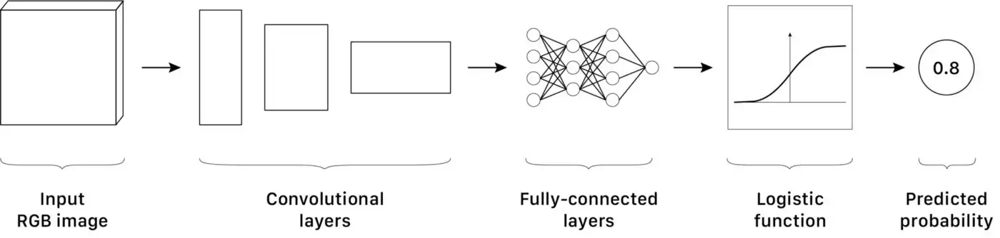
Một mô hình phân loại CNN đơn giản | Nguồn : Tác gỉa - Thiết kế: Lou HD
Bây giờ, hãy xem chúng ta chỉ có xe “bình thường” để huấn luyện. Thế thì mô hình sẽ hoạt động như thế nào nếu chúng ta muốn nó phân loại một chiếc xe công thức 1?
Như đã nói ở trên, covariate shift khiến giá trị kích hoạt bị phân tán. Ngay cả khi nó không làm vậy, nó cũng làm giảm hiệu năng của mô hình | Nguồn : Dhiva Krishna (Trái), Ferhat Deniz Fors (Phải)
Trong ví dụ này, có sự khác biệt giữa phân phối của dữ liệu huấn luyện vs đánh giả. Nói rộng hơn, sự thay đổi về hướng xe, ánh sáng, điều kiện thời tiết cũng đủ ảnh hướng đến hiệu năng của mô hình. Ở đây, mô hình của chúng ta không tổng quát đủ tốt.
Nếu chúng ta plot những đặc trưng được trính xuất ra từ không gian đặc trưng, chúng ta sẽ có hình giống như sau:
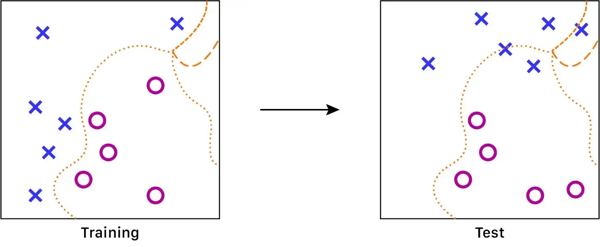
Hình 6.a: Tại sao chúng ta cần chuẩn hoá giá trị đầu vào của mô hình? Trường hợp không chuẩn hoá: Khi huấn luyện, giá trị inputs nằm xa nhau: hàm số xấp xỉ sẽ rất chính xác khi các điểm nằm cận nhau. Ngược lại, hàm này sẽ thiếu chính xác và bị ngẫu nhiêu khi mật độ dữ liệu thấp | Nguồn : Nguồn : Tác giả - thiết kế bởi: Lou HD
Gỉa định rằng ký tự X tương ứng với hình ảnh không xe hơi, và O là hình ảnh có xe hơi. Ở đây, chúng ta có một hàm để chia giữa hai loại ảnh. Nhưng hàm này sẽ có độ chính xác thấp hơn ở phần trên cùng bên phải của đồ thị vì không có đủ dữ liệu để xác định được hàm tốt hơn. Điều này có thể dẫn đến độ chính xác thấp hơn trong quá trình đánh giá.
Để huấn luyện mô hình hiệu quả hơn, chúng ta cần nhiều hình ảnh có xe hơi, với tất cả các điều kiện có thể tưởng tượng ra. Tuy rằng đây là chúng ta huấn luyện CNN, chúng ta cũng muốn rằng mô hình sẽ tổng quát hoá tốt chỉ với ít dữ liệu nhất có thể.
Từ góc nhìn của mô hình, hình ảnh khi huấn luyện - về mặt thống kê - thì quá khác biệt với hình ảnh khi testing. Tức là có covariate shift
Có thể giải quyết vấn đề này bằng những mô hình đơn giản hơn. Những mô hình logistic regression thường dễ tối ưu hơn khi giá trị input được chuẩn hoá (có phân phối gần với (𝜇 = 0, σ = 1)); Đây là lý mo mà dữ liệu đầu vào thường được chuẩn hoá.
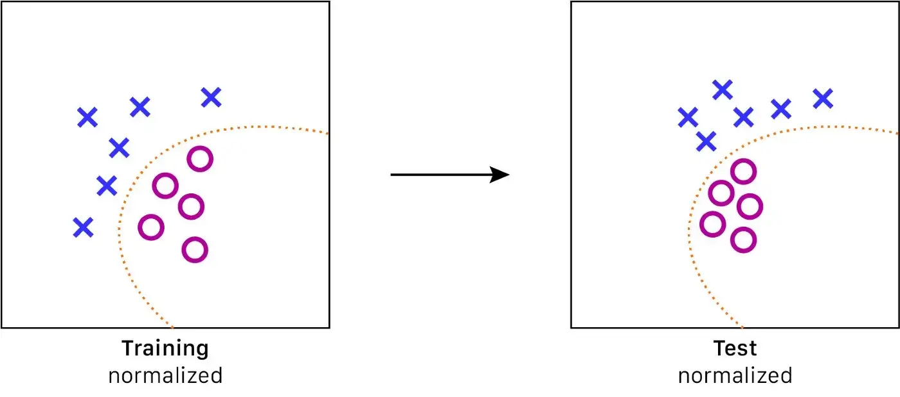
Hình 6.b: Tại sao chúng ta cần chuẩn hoá giá trị đầu vào của mô hình? Trường hợp có chuẩn hoá: Các dữ liệu được kéo gần lại hơn trong không gian đặc trưng -> Dễ tìm kiếm hàm tổng quát tốt hơn | Nguồn : Tác giả - thiết kế bởi: Lou HD
Giải pháp này được biết đến rộng rãi ngay cả trước khi bài báo về BN được đăng. Với BN, nhóm tác giả của [1] muốn mở rộng phương pháp này đến với những lớp ẩn để cải thiện quá trình huấn luyện.
3.2.1.2 Giải thiết của bài báo gốc: Internal covariate shift phá hỏng quá trình huấn luyện
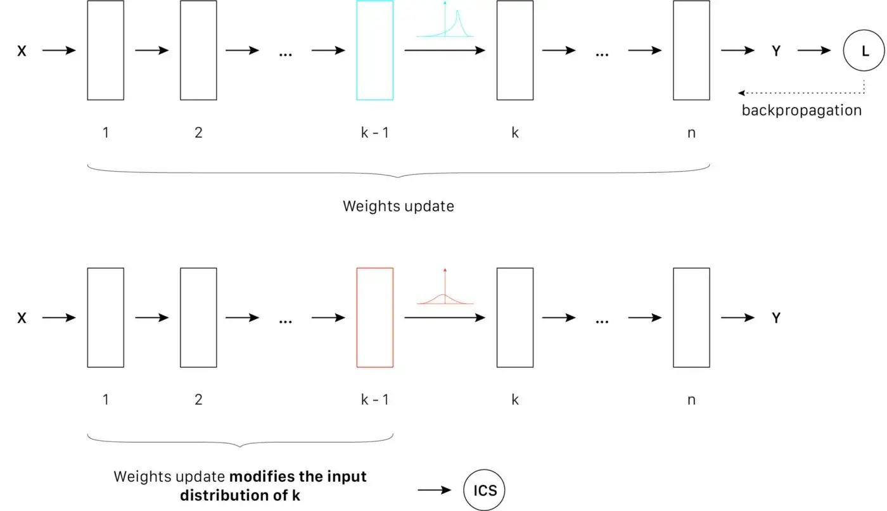
Hình 7: Nguyên lý Internal covariate shift (ICS) trong góc nhìn về sự ổn định phân phối | Nguồn : Tác giả - thiết kế bởi: Lou HD
Trong bài toán phân loại ở trên về xe hơi, có thể xem những lớp ẩn như những phần từ được kích hoạt khi nó phát hiện ra những đặc trưng liên quan đến xe hơi: như là bánh xe, lốp hoặc cửa xe. Chúng ta có thể giả định rằng những cái hiệu ứng nói đến ở trên có thể xảy ra giữa những lớp ẩn. Một cái bánh xe với một hướng xoay nào đó sẽ kích hoạt nơ-ron liên quan đến phân phối đó. Trong trường hợp lý tưởng, chúng ta muốn những một vài nơ-ron phản ứng với những phân phối của bánh xe ở bất cứ hướng xoay nào, để mô hình có thể xác định được xác suất ảnh input có xe hay không hiệu quả hơn.
Nếu dữ liệu input có covariate shift lớn, optimizer sẽ gặp vấn đề khi tổng quát dữ liệu. Ngược lại, nếu tín hiệu đầu vào luôn tuân theo phân phối chuẩn, optimzer sẽ dễ dàng tổng quát hơn. Với những điều này, tác giả của [1] đã áp dụng chiến thật chuẩn hoá dữ liệu trong lớp ẩn. Họ giả định rằng ép (𝜇 = 0, σ = 1) vào phân phối của tín hiệu trung gian sẽ tổng quát tốt hơn ở tầng “khái niệm” của những đặc trưng.
Tuy nhiên, chúng ta không phải lúc nào cũng muốn phân phối chuẩn trong những lớp ẩn. Vì nó có thể làm giảm tính biểu thị của mô hình:
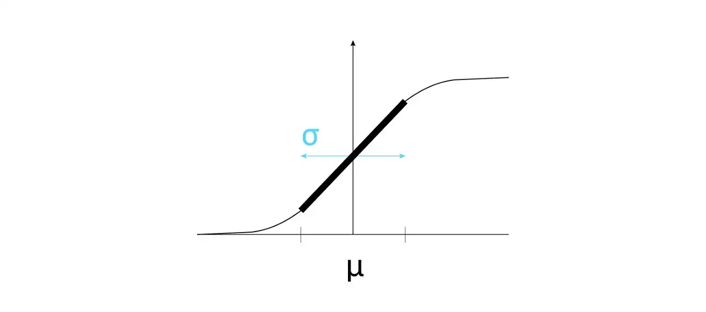
Hình 7: Lý do chúng ta không phải lúc nào cũng cần phân phối chuẩn cho lớp ẩn. Trong trường hợp này, hàm sigmoid sẽ chỉ hoạt được được phần linear của nó | Nguồn : Tác giả - thiết kế bởi: Lou HD
Vấn đề này được tác giả của [1] giải quyết bằng cách thêm 2 tham số huấn luyện là 𝛽 and 𝛾, giúp optimizer có thể chọn được trung bình tối ưu (dùng 𝛽) và độ lệch chuẩn tối ưu (dùng 𝛾) cho tác vụ nhất định.
Cảnh báo: Những giả thiết sau đã lỗi thời. Tuy vậy, vẫn nhiều nội dung hay về BN vẫn sử dụng những giả thiết đó là lý do BN hiệu quả. Hiện nay đã có nhiều công trình thách thức những giả thiết ban đầu.
Trong vài năm sau khi [1] phát hành, cộng đồng học sâu giải thích tính hiệu quả của BN như sau:
Giả thiết 1
BN -> Chuẩn hoá tín hiệu của lớp ẩn -> Thêm hai tham số huấn luyện để thay đổi phân phối và tận dụng phi tuyến tính -> Huấn luyện dễ hơn
Tại đây, chuẩn hoá (𝜇 = 0, σ = 1) được sử dụng để giải thích tại sao BN hiệu quả. Giả thiết này đã bị thách thức (đọc ở phần sau) và được thay thế bởi giả thiết tiếp heo:
Giả thiết 2
BN -> Chuẩn hoá tín hiệu của lớp ẩn -> Giảm sự phụ thuộc lẫn nhau giữa các lớp ẩn (theo góc nhìn về sự ổn định của phân phối) -> Huấn luyện dễ hơn
Sự khác biệt với giả thiết 1 là nhỏ nhưng lại rất quan trọng. Ở đây, mục tiêu của chuẩn hoá là để giảm đi sự phụ thuộc lẫn nhau giữa các lớp -> optimizer có thể chọn được phân phối tối ưu bằng cách thay đổi hai tham số. Hãy xem xét giả thiết này kỹ hơn.
3.2.2 Giả thiết - BN giảm sự phụ thuộc lẫn nhau trong các lớp ẩn khi huấn luyện.
Về phần này: tác giả không thể tìm thấy bằng chứng thuyết phục về giả thiết này. Thế nên, tác giả sẽ dựa vào giải thích của Ian Goodfellow: YouTube
Hãy xem xét ví dụ sau:
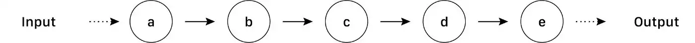
Hình 9: Một DNN đơn giản, chỉ bao gồm những biến đổi tuyến tính | Lấy cảm hứng từ Ian Goodfellow
Trong đó (a), (b), (c), (d), (e) là những lớp tuần tự trong DNN. Đây là một ví dụ rất hơn giản, chỉ bao gồm các lớp được liên kết với nhau bằng biến đổi tuyến tính. Giả sử chúng ta muốn huấn luyện mô hình trên bằng SGD.
Để cập nhật trọng số của lớp (a), chúng ta cần tính giá trị đạo hàm từ output của network như sau:
Hãy xem xét một network không có BNN. Từ phương trình ở trên, chúng ta kết luận rằng nếu tất cả giá trị đạo hàm (gradient) lớn thì đạo hàm của a (grad(a)) sẽ rất lớn. Ngược lại, nếu tất cả gradient đều nhỏ thì grad(a) gần như bằng 0.
Dễ dàng thấy rằng các lớp phụ thuộc vào nhau như thế nào bằng cách nhìn vào phân phối tín hiệu đầu vào của những lớp ẩn: một sự thay đổi trong trọng số của (a) sẽ dẫn đến thay đổi trọng số của lớp (b) và từ từ đến (d) và cuối cùng là (e). Sự phụ thuộc lẫn nhau này gây ra vấn đề với độ ổn định khi huấn luyện: Nếu ta muốn thay đổi phân phối đầu vào của một lớp ẩn nào đó, nó sẽ dẫn đến sự thay đổi của những lớp theo sau.
Tuy nhiên, SGD chỉ quan tâm đến mối liên hệ bậc 1 giữa các lớp. Nên, nó không bao quát được những những mối quan hệ bậc cao hơn nói ở trên.
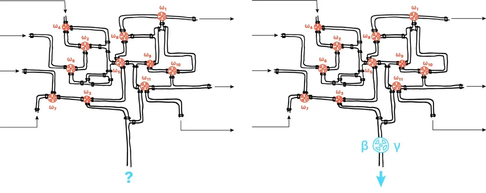
Hình 10: BN điều hoá dòng chảy của tín hiệu, bằng cách chuẩn hoá tín hiệu trong mỗi hidden unit, và cho phép điều chỉnh phân phối với và 𝛾. BN như là một cái van khiến việc điều khiển dòng chảy dễ dàng hơn ở vài chỗ mà không làm giảm khả năng phức tạp của mô hình. Lou HD
Thêm lớp BN giúp giảm sự phụ thuộc lẫn nhau giữa các lớp (theo cách nhìn về sự ổn định phân phối) trong quá trình huấn luyện. BN như một cái van nước giúp giảm lại dòng chảy, với hai tham số 𝛽 và 𝛾. Mà vì thế nên không cần xem xét tất cả tham số để hiểu về phân phối trong các lớp ẩn.
Lưu ý: Do có BN, optimizer có thể thay đổi trọng số mạnh hơn mà không làm suy thoái các tham số đã được điều chỉnh trước đó của lớp ẩn khác. Điều này khiến việc điều chỉnh các siêu tham số (hyperparameter) dễ hơn rất nhiều!
Ví dụ này bỏ qua giả thuyết cho rằng hiệu quả của BN là do sự chuẩn hóa của phân bố tín hiệu giữa các lớp (μ = 0, σ = 1). Ở đây, BN có mục đích làm cho việc tối ưu hóa tác vụ dễ hơn, cho phép nó điều chỉnh phân bố lớp ẩn với chỉ hai tham số một lúc.
Tuy nhiên, hãy nhớ rằng điều này chủ yếu là suy đoán thôi. Những thảo luận này nên được sử dụng như các kiến thức để xây dựng sự hiểu biết về BN. Chúng ta vẫn không biết chính xác tại sao BN hiệu quả trong thực tế!
Năm 2019, một nhóm nghiên cứu từ MIT thực hiện vài thí nghiệm thú vị về BN [2]. Kết quả của họ đe dọa lớn giả thuyết 1 (vẫn được chia sẻ bởi nhiều bài viết blog và MOOCs!).
Chúng ta nên xem qua tài liệu này nếu muốn tránh “giả thuyết điểm tối thiểu địa phương” về tác động của BN trên huấn luyện… ;)
Được rồi… bạn nên khởi tạo tốt hơn.
3.2.3 Giả thuyết 3 - BN làm cho không gian tối ưu hóa trở nên mượt hơn
Về phần này: Tác giả đã tóm tắt kết quả từ [2] mà có thể giúp chúng ta xây dựng cách hiểu tốt hơn về BN. Tác giả không thể tóm tắt đầy đủ, tài liệu này rất nhiều, tác giả đề nghị bạn đọc kỹ nếu bạn quan tâm đến những khái niệm đó.
Hãy đi tới thí nghiệm thứ 2 của [2]. Mục tiêu của họ là kiểm tra sự tương quan giữa ICS và lợi ích của BN trên hiệu suất huấn luyện (giả thuyết 1).
Khái niệm: Chúng ta sẽ gọi covariate shift này là ICS_distrib.
Để làm điều đó, nhà nghiên cứu đã huấn luyện ba mạng VGG (trên CIFAR-10):
Mạng thứ nhất không có bất kỳ lớp BN nào;
Mạng thứ hai có các lớp BN;
Mạng thứ ba tương tự như mạng thứ hai, ngoại trừ việc họ đã thêm một số ICS_distrib trong đơn vị ẩn trước khi kích hoạt (bằng cách thêm khoảng sai và biến thể ngẫu nhiên).
Họ đo lường độ chính xác đạt được bởi mỗi mô hình và sự thay đổi của giá trị phân bố theo số lần lặp. Đây là kết quả mà họ đã nhận được:
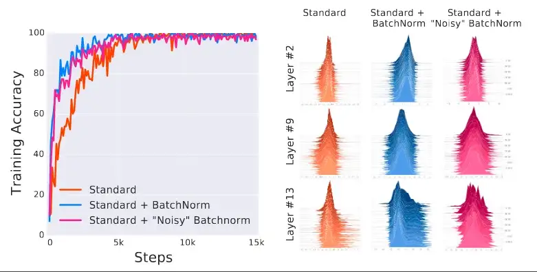
BN với ICS_distrib | Các mạng với BN được huấn luyện nhanh hơn so với mạng tiêu chuẩn; thêm rõ ràng ICS_distrib trên một mạng được kiểm soát không làm giảm lợi ích của BN. | Nguồn: [2]
Chúng ta có thể thấy rằng mạng thứ ba có một ICS rất cao (như dự đoán). Tuy nhiên, mạng bị nhiễu vẫn được huấn luyện nhanh hơn so với mạng tiêu chuẩn. Kết quả đạt được của nó tương đương với kết quả được đạt được với một mạng BN tiêu chuẩn. Kết quả này cho thấy rằng hiệu quả của BN không liên quan đến ICS_distrib.
Chúng ta không nên loại bỏ giả thuyết ICS quá vội: nếu hiệu quả của BN không xuất phát từ ICS_distrib, nó có thể liên quan đến một định nghĩa khác của ICS. Sau cùng, sự giả thuyết số 1 cũng có vẻ đúng, phải không?
Vấn đề chính với ICS_distrib là định nghĩa của nó liên quan đến phân bố đầu vào của các đơn vị ẩn. Vì vậy, không có liên kết trực tiếp với vấn đề tối ưu hóa của nó.
Tác giả của [2] đã đưa ra một định nghĩa khác của ICS:
Hãy xem xét một đầu vào X cố định.
Chúng ta định nghĩa ICS, từ một góc nhìn của tối ưu hóa, là sự khác biệt giữa đạo hàm tính toán trên lớp ẩn k sau khi phục hồi lỗi \(L(X)_{it}\) và đạo hàm tính toán trên cùng một lớp k từ mất mát \(L(X)_{it+1}\) sau lần lặp thứ \(it\)
Định nghĩa này nhằm tập trung vào các giá trị đạo hàm hơn là trên phân bố đầu vào của lớp ẩn, giả sử rằng nó có thể cho chúng ta các gợi ý tốt hơn về cách ICS có thể có ảnh hưởng đến vấn đề tối ưu hóa sâu bên trong.
Ký hiệu: ICS_opti bây giờ đề cập đến ICS được định nghĩa từ một góc độ tối ưu hóa.
Trong thí nghiệm tiếp theo, tác giả đánh giá tác động của ICS_opti trên hiệu quả huấn luyện. Để làm như vậy, họ đo lường sự biến đổi của ICS_opti trong quá trình huấn luyện cho một DNN với có và không có BN layers. Để định lượng sự biến đổi của đạo hàm được nêu trong định nghĩa ICS_opti, họ tính toán:
Sự khác biệt L2: có đạo hàm có norm gần nhau trước và sau khi cập nhật trọng số không? Lý tưởng: 0
Góc Cosine: có đạo hàm có hướng gần nhau trước và sau khi cập nhật trọng số không? Lý tưởng: 1
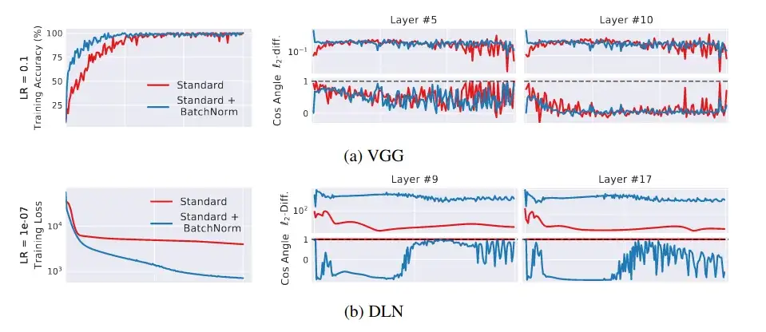
Ảnh hưởng của BN lên ICS_opti | Khoảng cách L2 và góc cosine gợi ý rằng BN không tránh được ICS_opti (ngược lại, nó còn làm gia tăng điều đó) | Nguồn: [2]
Kết quả lại chút bất ngờ: mạng sử dụng BN có vẻ có ICS_opti cao hơn so với mạng tiêu chuẩn. Hãy nhớ rằng mạng với BN (đường xanh) được huấn luyện nhanh hơn so với mạng tiêu chuẩn (đường đỏ)!
ICS có vẻ không liên quan đến hiệu quả huấn luyện… ít nhất là cho định nghĩa ICS_opti.
Một cách nào đó, Batch Normalization có ảnh hưởng khác trên mô hình, giúp cho việc hội tụ dễ dàng hơn.
Bây giờ, hãy xem xét cách BN ảnh hưởng đến cảnh quan tối ưu hóa (optimization landscape) để tìm theo manh mối nhé.
Tiếp theo là thí nghiệm cuối cùng được đề cập trong bài viết này:
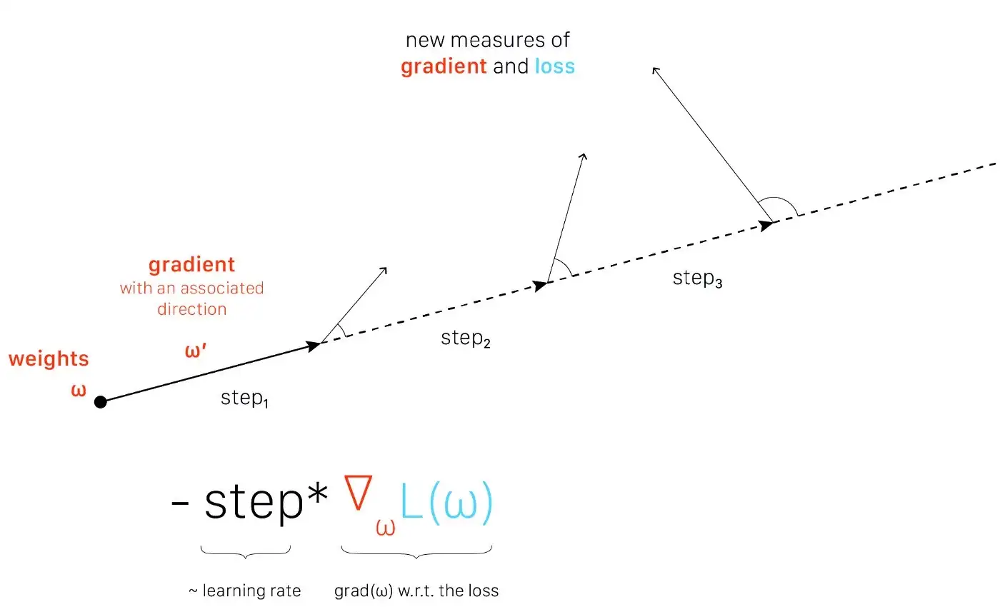
Khám phá cảnh quan tối ưu hoá (Optimization landscape exploration) theo hướng đạo hàm. Thí nghiệm được thực hiện trong paper [2] | Cảm hứng từ: Andrew Ilyas - thiết kế bởi: Lou HD
Từ một giá trị đạo hàm, chúng ta cập nhật trọng số với các bước tối ưu hóa khác nhau (mà hoạt động như tốc độ học - learning rate). Nói một cách trực quan, chúng ta định nghĩa một hướng từ một điểm nhất định (tức một cấu hình mạng ω) trong không gian đặc trưng, sau đó khám phá thêm cảnh quan tối ưu hóa theo hướng này.
Tại mỗi bước, chúng ta đo lường đạo hàm và mất mát (loss). Chúng ta có thể so sánh các điểm khác nhau của cảnh quan tối ưu hóa với một điểm bắt đầu. Nếu chúng ta đo lường sự biến đổi lớn, cảnh quan rất không ổn định và đạo hàm không chắc chắn: các bước lớn có thể làm xấu việc tối ưu hóa. Ngược lại, nếu sự biến đổi đo được nhỏ, cảnh quan ổn định và đạo hàm đáng tin cậy: chúng ta có thể áp dụng các bước lớn hơn mà không gây hại cho tối ưu hóa. Nói cách khác, chúng ta có thể sử dụng một tốc độ học lớn hơn và làm cho việc hội tụ nhanh hơn (một tính năng được biết đến của BN).
Hãy xem kết quả:

Tác động của BN lên việc làm mượt cảnh quan tối ưu hoá (optimization landscape smoothing) | BN làm giảm thiểu đáng kế sự biến động của đạo hàm | Nguồn: [2]
Rõ thấy rằng cảnh quan tối ưu hoá mượt hơn nhiều khi dùng các lớp BN.
Cuối chùng chúng ta có kết quả để dùng để giải thích sự hiệu quả của BN: Lớp BN làm cho cảnh quan tối ưu hoá mượt hơn. Từ đó thì việc tối ưu hoá cũng dễ dàng hơn: chúng ta có thể sử dụng tốc độ học cao hơn mà không bị gradient vanishing hoặc gradient explosion.
Giả thiết thứ 3 thì đến từ bài báo [2]:
3.2.4 Gỉa thiết 3
BN -> chuẩn hoá tín hiệu trong các đơn vị ẩn -> làm mượt cảnh quan tối ưu hoá -> huấn luyện nhanh và ổn định hơn.
Nó đặt ra một câu hỏi khác:** Làm sao mà BN lại làm cho cảnh quan tối ưu hoá mượt hơn?**
Tác giả của [2] đã khám những vấn đề này từ góc nhìn lý thuyệt. Nghiên cứu của họ rất có ích trong việc hiểu được hiệu ứng làm mượt của BN. Chi tiết hơn, họ chứng minh rằng BN làm cho cảnh quan tối ưu mượt hơn trong khi vẫn giữ tất cả các cực tiểu của cảnh quan thường. Nói cách khác, BN thay đổi tham số của bài toán tối ưu phía dưới, làm cho huấn luyện nhanh và dễ hơn!
Trong những nghiên cứu bổ sung, tác giả của [2] quan sát rằng hiệu ứng này không chỉ có ở BN. Họ đạt được hiệu năng huấn luyện tương đương với phương pháp tối ưu khác như L1 hay L2. Những quan sát này gợi ý rằng sự hiệu quả của BN phần lớn đến từ sự trùng hợp, do tận dụng một cơ chế tầng dưới nào đó mà chúng ta chưa nhận dạng chính xác được.
Để kết thúc phần này, bài báo này thách thức cực mạnh ý tưởng rằng BN hiệu quả vì đó giảm thiểu ICS (cả trong góc nhìn về sự ổn định của phân phối và cả về tối ưu hoá). Tuy nhiên, nó lại nhấn mạnh về ảnh hưởng của sự làm mượt cảnh quan tối ưu của BN.
Tuy rằng bài báo này đưa ra giả thiết về ảnh hưởng của BN lên tốc độ huấn luyện, nhưng nó không trả lời tại sao BN lại hỗ trợ tốt cho quá trình tổng quát hoá.
Họ có thảo luận nhanh rằng làm cho cảnh quan tối ưu hoá mượt hơn cũng giúp mô hình hội tụ ở các cực tiểu phẳng -> làm cho khả năng tổng quát hoá tốt hơn. Tuy nhiên, nhận định này vẫn cần thêm nhiều giải thích hơn.
Đóng góp chủ yếu của tác giả là thách thức ý tưởng về sự ảnh hưởng của BN lên ICS - vậy thôi cũng đủ quan trọng rồi!
3.3 Tổng hợp: Những lý do cho sự hiệu quả của BN mà chúng ta biết
Giả thiết 1: BN làm giảm ICS -> Sai: bài báo [2] chứng minh rằng không có sự tương quan giữa ICS và hiệu năng huấn luyện trong thực tế.
Giả thiết 2: BN làm cho optimizer tối ưu nhanh hơn vì nó thay đổi phân phối đầu vào của đơn vị ẩn chỉ bằng 2 tham số -> Có thể: Giả thiết này nhấn mạnh sự liên quan chéo giữa các tham số khiến tối ưu khó hơn. Tuy vậy, nó vẫn chưa đủ thuyết phục.
Giả thiết 3: BN thay đổi tham số của bài toán tối ưu tầng sâu, làm nó mượt và ổn định hơn. -> Có thể: Kết quả cũng khá gần đây. Đến thời điểm của bài viết gốc thì dường như giả thuyết này chưa bị thách thức. Bài báo cũng đưa ra những thí nghiệm thực tế cũng như giải thích về lý thuyết, tuy vẫn chưa trả lời một số câu hỏi nền tảng như “tại sao BN lại hỗ trợ tổng quát hoá?”
Thảo luận: Đối với tác giả của bài viết này, hai giả thiết cuối có vè tương thích. Về trực quan thì chúng ta thấy giả thiết 2 như một phép chiếu từ bài toán nhiều tham số thành bài toán ít tham số hơn; kiểu như bài toán giảm chiều dữ liệu, điều có thể hỗ trợ cho tổng quát hoá. Bạn nghĩ gì về điều này?
Vẫn còn nhiều những câu hỏi mở và BN vẫn là một chủ đề nghiên cứu ngày nay. Thảo luận những giả thiết này vẫn giúp ta hiểu hơn về phương pháp thường dùng này, và bỏ qua những nhận định sai lầm trong những năm gần đây.
Tuy vậy, những câu hỏi này không thể ngăn cản chúng ta tận dụng lợi ích mà BN đem lại trong thực tế!
4 Kết luận
Batch Normalization (BN) là một những những bước tiến quan trọng nhất trong lĩnh vực học sâu trong thời gian gần đây. Bằng cách sử dụng hai phép biến đổi tuyến tính liền nhau, phương pháp này việc huấn luyện DNN nhanh và ổn định hơn.
Giả thiết được chấp nhận rộng rãi nhất về tại sao BN hiệu quả là do nó giảm thiểu sự phụ thuộc lẫn nhau giữa các lớp ẩn khi huấn luyện. Tuy nhiên, sự ảnh hưởng của phép biến đổi để chuẩn hoá lên độ mượt của cảnh quan tối ưu hoá có vẻ mới là cơ chế quan trọng đem đến sự hiệu quả cho BNN.
BN cũng được sử dụng trong các DNN phổ biến hiện nay như ResNet [4] hay EfficientNet [5], v.v
Nếu bạn có hứng thú với Học sâu, thì phương pháp này là không thể bỏ qua.
4.1 Câu hỏi mở
Dù rằng BN rất hiểu qua trong thực nghiệm, vẫn còn tồn tại nhiều câu hỏi về cách thức hoạt động phía sau của nó mà chưa có lời giải.
Sau là danh sách (không đầy đủ):
Tại sao BN lại hỗ trợ quá trình tổng quát hoá?
BN có phải là phương pháp chuẩn hoá tốt nhất cho tối ưu hoá?
𝛽 và 𝛾 ảnh hưởng như thế nào đến sự mượt của cảnh quan tối ưu?
Thực nghiệm trong bài [2] về cảnh quan tối ưu hoá tập trung về tác động ngắn hạn của BN lên đạo hàm: họ đo lường sự biến đổi của gradient và loss trong một lần lặp duy nhất, với số lượng bước khác nhau. Vậy BN sẽ ảnh hưởng lên gradient trong dài hạn như thế nào? Liệu sự phụ thuộc lẫn nhau giữa các trọng số có ảnh hưởng nào đến cảnh quan tối ưu hoá?
5 Tài liệu tham khảo
[1] Ioffe, S., & Szegedy, C. (2015). Batch normalization: Accelerating deep network training by reducing internal covariate shift, arXiv preprint arXiv:1502.03167.
[2] Santurkar, S., Tsipras, D., Ilyas, A., & Madry, A. (2018). How does batch normalization help optimization?, Advances in Neural Information Processing Systems
[3] Szegedy, C., Liu, W., Jia, Y., Sermanet, P., Reed, S., Anguelov, D., … & Rabinovich, A. (2015). Going deeper with convolutions, Proceedings of the IEEE conference on computer vision and pattern recognition
[4] He, K., Zhang, X., Ren, S., & Sun, J. (2016). Deep residual learning for image recognition. In Proceedings of the IEEE conference on computer vision and pattern recognition
[5] Tan, M., & Le, Q. V. (2019). Efficientnet: Rethinking model scaling for convolutional neural networks, arXiv preprint arXiv:1905.11946.
[6] Goodfellow, I., Pouget-Abadie, J., Mirza, M., Xu, B., Warde-Farley, D., Ozair, S., Courville, A. Bengio, Y. (2014), Generative adversarial nets, Advances in neural information processing systems
6 Hơn nữa
Bài giảng xuất sắc của của Ian Fellow về Batch Normalization: Link
Bài thuyết trình của bài báo [2] bởi một trong những tác gỉa. Khán giả có nhiều câu hỏi sắc bén về BN: Link
Nên để BN sau hay trước hàm kích hoạt? -> Stackoverflow
Nên để BN sau hay trước hàm kích hoạt? -> Reddit